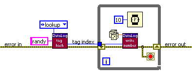

The LuaVIEW data logger provides SCADA-like functionality. The system is built on powerful abstractions with an emphasis on scalability, robustness, modularity, and flexibility through scriptable configuration, initialisation, maintenance, logging, and querying. Distributed access is enabled by an (optional) client-server architecture. Each server can manage multiple logging databases. A database mirroring mechanism allows for incremental backups.
The LuaVIEW data logger is copyright © 2003-2005 by CIT Engineering. The system was implemented and documented by Albert-Jan Brouwer.
LabVIEW 7.0 or higher and LuaVIEW version 1.2.0. There are no dependencies on external drivers or libraries. To lower memory usage and load times, only minimal use is made of standard library VIs.
When LuaVIEW has not been installed yet, do so. In addition, the client-server framework must be installed. Next, place the data logger ZIP archive into the LuaVIEW distribution directory (the directory that contains amongst other things the luaview/, library/, and clientsrv/ subdirectories) and extract it there. This will create an additional datalog/ subdirectory and add documentation to the html/ subdirectory. It is advisable to mass compile the datalog/ subdirectory by selecting Tools>Advanced>Mass Compile from the LabVIEW menu.
The datalog/ subdirectory contains an example logging server VI and its resources. To customise the server without messing up the example, make a copy of the entire datalog/resources/ directory to a place of your choosing. The scripts located inside the copied resources/ directory can be edited to customise the server initialisation and configuration. This is detailed in later sections of this manual. Next, load "datalog/DataLog Example Server.vi" into LabVIEW and save it next to the copied resources/ directory. The copied server VI can be given a different name if desired.
To give the system a try, run the copied server VI and connect by running the client located at "clientsrv/ClientSrv Client.vi" and selecting the Server>Connect menu item. When running the client on the same machine as the server, it is possible to connect by specifying "localhost" as machine name. By default, no passwords have been configured, so the password field can be left empty. Once connected, the runlevel can be set through the Server>Runlevels menu. Two minimal logging databases named "testdb" and "mirrordb" have been predefined in the example server configuration. Select the "drivers" runlevel before trying out the various user interfaces provided by the client.
The descriptions in the remainder of this manual assume a separate server and client. The manual of the client-server framework explains this organisation and how to customise it. Note though that neither the provided user interfaces nor the separation between client and server are mandatory: because the server runs independently of the client, it is easy to delete all the remote access related bits and turn the server into a single application with custom user interfaces.
The common theme for applications requiring SCADA is a need for the continuous monitoring and control of a complex physical process or system. Continuity implies that it must be possible to run control and acquisition tasks while logging the changing state without interruption. Complexity implies that the state of the physical process and its control parameterisation is comprised of many elements. The problem is that it is difficult to simultaneously support continuity and complexity. Multiple tasks need to be scheduled without blocking or being blocked by other tasks. Many changing state elements all need to be efficiently monitored and logged to disk, but a hard disk has only a single read-write head. To enable an elegant software solution, it is desirable that control tasks and state elements can be implemented and represented without mutual dependencies. In addition, the physical nature of the process implies that the interfacing to instrumentation and sensors must be accommodated.
The solution to accommodating sensors and instrumentation is LabVIEW: the LabVIEW development system includes support for many instruments, protocols, interfaces, buses, and data acquisition cards. Because the data logger is implemented in LabVIEW, such customisation can be done simply by adding hardware-specific LabVIEW code to the same development environment or runtime as used by the logger. This sidesteps integration and deployment issues.
The solution to scheduling control and acquisition tasks is LuaVIEW: tasks can run or call both LabVIEW and Lua code, and are provided with their own execution context and inter-task communication infrastructure Typically, the Lua script associated with a task implements the high-level logic and calls LabVIEW-implemented functions that perform low-level operations such as hardware access. Since Lua scripts are interpreted, the system is re-programmable and extensible at run time.
The remaining problem is how to efficiently monitor and log many state elements without introducing interdependencies. In particular, it should be possible to add, remove, or configure state elements without affecting others. Also, access (storage, retrieval) to the values of a particular state element should be fast and independent of the remaining state. Lastly, it is desirable to be able to represent state elements with an adjustable temporal resolution since not all state varies at the same rate. Relational databases can represent a data model (one table per state element with records that hold timestamp and value fields) that accommodates these requirements, but they will quickly choke because of the frequent updates distributed across many tables. To accommodate a high aggregate logging rate and allow for efficient storage and retrieval, specialised infrastructure is required. The LuaVIEW data logger provides such infrastructure.
A logging database is designed to efficiently represent the time-dependent state of a complex process or system. By buffering and storing important state as a function of time, the database builds up a historical record suitable for monitoring and analysis. What state is important enough to be stored depends on the application at hand. For a typical test and measurement application, the state to be stored will likely include sensor readings, set points, limits, as well as test-step variables. The LuaVIEW data logger can serve as a pure data logger, or as the basis of a SCADA or test-sequencing system.
There is a range of problems that, for performance reasons, require a data logger. For short-duration measurements, it suffices to buffer all acquired data in memory. For small invariant collections of signals with common timing, appending data to a file is the simplest and best-performing solution. For slow measurements or measurements that can be shoe-horned into a record format, a relational database might be able to cope. However, when performing a long-duration or continuous measurement of a complex set of signals at a moderate to high data rate, a data logger is required. The appendix on performance and scalability helps estimate what demands the system can cope with.
Even when the provided performance is overkill, basing a measurement application on a logging/SCADA system can be convenient because of its feature set and infrastructure provisions. One advantage that the LuaVIEW data logger has over most similar systems is that it is part of the same LabVIEW runtime as the LabVIEW code that handles the instrumentation. For LabVIEW programmers, this greatly simplifies development, testing, and deployment. Because the system scales well, and is easy to configure and extend, it can help future proof projects with open-ended requirements.
In addition to conventional logging/SCADA functionality, the LuaVIEW data logger is designed to enable what might roughly be described as "generalized experimentation". When performing an experiment or a prolonged test, the common theme is that one is interested in how one or more physical values vary as a function of one or more parameters. A naive implementation of such an experiment steps or sweeps the parameter(s) and measures the value(s) of interest such that each value can be correlated with the corresponding parameter setting(s). For example, one can step a voltage across a device and measure the current through it at each step. By storing the voltage and current values in two matching arrays, an I-V curve is obtained.
When separately time stamping and logging all values and parameters of potential interest, the correlation can also be performed on the basis of temporal coincidence. For example, given a logged series of time-stamped voltage settings {V(t1), V(t2), V(t3), ...}, it is possible to obtain the corresponding currents {I(t1), I(t2), I(t3), ...} by interpolating the current data at time series {t1, t2, t3, ...}, even when the current was logged at a different rate with different timestamps. The result is again an I-V curve. The difference is that the correlation of physical value and parameter was done through later retrieval and temporal correlation instead of through explicit up-front programming. Advantages are:
A logging database contains a collection of tags. Each tag represents an element of the state of the system being monitored or tested. Tags store a series of time-stamped values, thereby reflecting the temporal evolution of the corresponding state element. Since each value has its own timestamp, the representation can cope with a variable data rate. Each tag can be independently written, read, or queried.
A tag can store one of two kinds of values: numbers or strings. Number tags have values that are represented as 64-bit double-precision floating-point numbers. The combination of a number value and its timestamp is called a point because it fixes a position on the two-dimension time/value plane used when plotting the number tag. Strings tags have values that are represented as arbitrary-length 8-bit character sequences. It is allowable to store anything that converts without loss into a double-precision float into a number tag. For example, a bit mask. Similarly, strings can hold anything that converts into a an arbitrary-length 8-bit character sequence, which is in fact anything since arbitrary binary data can always be converted into such a representation. However, the provided user interfaces assume that tags contain actual numbers or text strings when displaying and exporting tag values. When storing something other than numbers or strings, you will have to provide code that properly interprets the data when it is retrieved from its tag.
Tags can have one of three kinds of temporal type that determine how the tag's value is to be interpreted between successive points. The sample temporal type specifies linear interpolation. It should be used when storing polled values of a state element that changes continuously and is sampled with sufficient bandwidth. For example, a physical sensor value. The set&hold temporal type should be used for state elements that hold their value after having been changed. For example, the set point of an instrument or the value of a limit. The event temporal type should be used when each state value being stored is defined only at the particular time of its timestamp. For example, a sensor sampled so infrequently that subsequent values are uncorrelated, or a string tag used to log error messages. The difference between temporal types is illustrated graphically below.
Values stored into a tag are appended in write-order. For each of the successive values, a timestamp must be provided. These are required to increase monotonically: later values must follow earlier values. It is not possible to change already stored values: the past cannot be changed. Other than the temporal coincidence of timestamps, there are no stored relations between tags. Newly written values and their timestamps are buffered in memory and later logged to disk. A configurable logging algorithm determines whether all values are logged or some reduction is to be used to preserve disk space.
Tag values can be retrieved as a function of time since each value is time-stamped. However, it is cumbersome to do all retrieval based on time: often one is interested in the current value of a tag, or the most recent few values. When retrieving the current value of a tag, the last-written value is returned irrespective of the value type or temporal type of the tag, provided that logging is ongoing. The current tag values are therefore an approximation of the actual current state: the last update of a tag might have occurred a while ago and therefore be slightly out-of-sync with the actual state: how frequently you update a tag determines how current its current value is.
Reading the recent values of a tag can be of interest when performing online analysis or monitoring. To allow for such use, a configurable amount of the most recently written values are buffered in memory for number tags, provided that logging is ongoing. This does not apply to string tags since only the most recently written string is buffered so as to avoid using too much memory (strings can be of arbitrary size).
When querying historical data, the on-disk tag log is read from. The log structure allows speedy retrieval of a time range of values as specified by a begin and end time. Alternatively, it is possible to retrieve an index range: an index of 0 denotes the first value logged to a tag, 1 denotes the second value, and so on. Lastly, it is possible to specify a series of times at which to interpolate a tag. As is evident from the picture above, this makes sense only for tags of sample or set&hold temporal type.
To set up a new logging database, create an empty directory to hold its data, and add the path to that directory to the "databases.lua" runlevel script. The name of a database will equal the name of its directory. Each server can manage multiple logging databases. Databases become accessible once the "databases" runlevel has been reached. The first databases in the list of databases is the current database. Only the tags of the current database can be written to and are provided with in-memory buffers for retrieval of recent values, but only after the "datalogging" runlevel has been reached. The other databases can only be queried for historical data.
Creating multiple databases can be useful for several reasons. One use is to have a separate database for testing as well as for measuring. By making the testing database the current database during development, the actual measurement database does not get polluted. Another use is to retire the current database when an important milestone has been reached and start out with a fresh database. Tag management functions are available that automate the creation of a fresh database with empty tag logs that is otherwise identical to the database being retired. Lastly, an additional database is required when mirroring the content of a database located on a remote server.
A database must be configured to one of three modes: locked, unlocked, and mirrored via the "databases.lua" runlevel script. A mirrored database is updated incrementally to reflect the content of a remote database. Unlocked databases can be modified, locked databases cannot. Typically, you will want to lock a database on retirement. When the current database is unlocked, it is possible to activate the "datalogging" runlevel which, when reached, causes the current database to go into live mode. Once live, the tags of the current database can be written to.
To delete or rename a database, make sure that the server is not running or bring down the server to a runlevel below the "databases" runlevel. Once this is the case it is safe to delete or rename the directory containing the database and adjust the list in the "databases.lua" runlevel script accordingly.
To set up a logging database for a test or measurement system, determine the important state elements and create corresponding tags. This requires that the "databases" runlevel has been reached. To manually create a tag, use the "Create" button of the "Tag Manager" user interface. After specifying the tag name, a dialog will appear that asks for the tag's initial value, value type, temporal type, and unit. These are creation parameters: once chosen, they can no longer be changed. Subsequently, a dialog allows specification of the tag configuration parameters: these can be adjusted later via the "Config" button of the "Tag Manager". Once created, it is possible to rename, clone, and delete a tag via the synonymous "Tag Manager" buttons. Read the online help attached to each parameter and button to learn more.
When you have a lot of tags to create or (re)configure, using the "Tag
Manager" can get tiresome. It is therefore possible to script the creation,
configuration, and management of tags.
This can be done via DB.create,
DB.config,
DB.reconfigure and other methods that operate on a database
object as returned by the DB.lookup
function. Some high-level tag management
functions built on top of these methods are defined in the "database management.lua"
script. This script is located in the resources/import/ directory. In the
example server configuration, this directory is included in the list of script search
directories so that the scripts located there can be imported
by specifying only their name.
In addition to manual and scripted tag creation and configuration, it is also possible to manipulate a database directly through the file system while the server is off line. Given a choice, one should refrain from doing so because this bypasses run-time checks. Still, it provides for a relatively easy means of merging two databases or setting up a new database with some tags copied over from an existing database. To learn more, see this appendix.
To set limits and bounds for a number tag, create meta tags via the "Meta" button of the "Tag Manager". Limits and bounds can change as a function of time, need to be programmatically adjustable, and must persist their value. They therefore require the very same kind of infrastructure as an actual tag. Hence, the data logger implements meta tags as set&hold number tags. This allows the value changes of limits and bounds to be monitored, graphed, logged, and queried.
The name of meta tags is derived from the name of the number tag they belong to by appending a name extension that specifies the type of bound or limit. When the parent tag is renamed, any attached meta tags are renamed with it. The unit of a meta tag always equals the unit of the parent tag. The list of allowable meta tags as specified by the name extension is as follows:
Limits and bounds as set via meta tags are checked or applied whenever the number tag they belong to is updated. The "min" and "max" meta tags specify bounds. When the value written to the parent tag exceeds either of these bounds, it is clamped to the bound being exceeded. This can be useful as an additional safety mechanism, e.g. so as to ensure that a set point that is settable via a tag never escapes from a particular range. The "warn_lo" and "warn_hi" limits cause a warning message to be sent to a task with identifier "warnings". The example implementation of the warnings task writes the strings it receives to its prints buffer and also logs them to a string tag named "warnings". A limit or bound can be disabled temporarily by writing a not a number (NaN) value to the corresponding meta tag.
Exceeding one of the limits with prefixes "A_" through "N_" causes a message with format "<hi|lo>,<tagname>" to be sent to tasks with identifiers "A_handler" through "N_handler" respectively. By implementing such task scripts, it is possible to define up to fourteen custom limits handlers. Typical limit handling actions include stopping tasks, resetting instruments, bringing down the server to a safer runlevel, and logging an error. The handler tasks are started by the "limits" runlevel. To add handlers, change the "limits.lua" runlevel script. To customise handlers, modify the task scripts specified there.
Once a limit is exceeded, no further messages are sent. Only after the value of the tag drops back below the "hi" limit, or rises back above the "lo" limit it has exceeded does it again become possible for that limit to cause a limit exceeded message. In short, a limit remains latched while exceeded. This is flagged via a red background colour for the tag's value field in both the "Tag Manager" and "Live Tag Table". Exceeded warning limits and max/min bounds are marked with orange and purple respectively.
Two tag configuration parameters can moderate the sending of limit messages (blue crosses). The deadband parameter causes a limit to remain latched until the tag drops by at least the specified amount below a previously exceeded "hi" limit, or rises by at least the specified amount above a previously exceeded "lo" limit. This serves to prevent the generation of many successive limit messages when the tag is noisy and able to gradually approach the limit level, thereby repeatedly jittering across it.
A nonzero limit delay parameter postpones the generation of the limit message, and the latching of the limit, until the tag has remained in excess of the limit for at least that delay time. This can help prevent spurious limit messages for signals with spikes, dips, or transient overshoots. Since limits are checked when the tag is written to, the actual delay before the limit is latched can be markedly larger than the limit delay when the tag is updated infrequently. Even so, it is best not to specify a limit delay close or equal to N (an integer) times the tag write period. This can cause jitter in the actual delay because the limit delay will either just have been reached or is almost about to be reached on the Nth write after the initial write in excess of the limit. For small values of N, such jitter is significant. It can be avoided by using limit delay setting of N-1/2 times the tag write period.
Tag names must start with an underscore ('_') or a lower or
uppercase letter ('A'..'Z' or 'a'..'z'). The remaining characters in the name may in
addition be digits ('0'..'9'). This ensures that tag names are valid Lua
identifiers. The tags in a
database occupy a single namespace. When you need to create a lot of tags, it is
advisable to do a little up-front planning and design a tag naming convention so as to add structure
to this namespace. This can be done by choosing common or descriptive prefixes,
infixes, or postfixes for related tags. For example, a triplet of tags
representing a position vector can be named "pos_x", "pos_y",
and "pos_z". When the chosen naming
convention is applied consistently, it becomes possible to select a group of related
tags through a wildcard pattern as can be specified in the
"filter/subset" field of the "Tag Manager" or via the pattern
parameter of the DB.list
method. This makes the database easier to manage.
Sometimes it is desirable to group the same tag in a number of different ways. For example, a tag can be grouped by the type of physical signal, by sensor or actuator type, by being relevant to the monitoring of a particular subsystem, and so on. Accommodating such diverse groupings via a single naming convention will make that convention rather convoluted. For this reason it is possible to group the tags of a logging database into named subsets. These can be created via the "Tag Subset Editor". A reasonable strategy is to incorporate the most important few grouping relations in the tag naming convention, and use subsets for weaker associations.
Note that tag subsets are an integral part of a logging database: when
renaming or deleting tags, the subsets defined for the affected database are updated
accordingly. To retrieve the list of defined subsets, use the DB.subsets
method. To retrieve the names of the tags included in a specific subset, use
the DB.subset method.
Programmatically retrieving subsets can be useful when writing query scripts.
Subsets also enable the quick selection of a group of tags for the "Tag
Manager", "Log Table", and "Live Tag Table" user
interfaces.
Once you have created, configured, and named tags for the state elements that you want to monitor and log, actually updating those tags requires state values to be written to them. This can only be done for the current database provided that it is live. The current database goes live when the "datalogging" runlevel is started. Any code that writes to tags should therefore be run above the "datalogging" runlevel.
Both a LabVIEW and Lua tag write interface is provided. Acquiring state values and writing them to tags is the only programming that is required to use the system as a pure data logger. How to acquire state values is heavily dependent on choice of instrumentation, type of test parameterisation, and so on. This will vary wildly from project to project, and is therefore left as an exercise to the reader. A typical example would be to periodically read a sensor or data socket, and write the acquired value to a sample tag. Since LabVIEW can easily access instruments, this will normally be done in LabVIEW. This appendix suggests various solutions to common issues that crop up when trying to write such code.
Aside from sensor values, there is often other state of interest. For example, set points may need logging. Also, it is often convenient to track the steps of a test via one or more tags. Such tags can simplify querying and analysis by flagging the time periods during which particular test actions took place. Since Lua is handy for test sequencing, code that writes to such tags is likely to be part of a Lua script that schedules the test steps.
To write to a number or string tag from LabVIEW, use the Write
Number or Write String API VI respectively.
To do the same from Lua, use the Tag.write and
StringTag.write
methods. When writing a number, any bounds and limits set for the tag will be checked against the value being
written.
While the current database is live, its tags cannot be created, renamed, or deleted. Thus, the tag names and indices can be assumed to remain invariant by any code running in runlevels above the "datalogging" runlevel. When frequently writing to the same tag, overhead can be reduced slightly by using its index instead of its name. This can be done by looking up a tag's index once through the Tag Hash, and reusing the index in the write loop. For example, the following diagram efficiently writes random numbers to a tag named "randy":

The same operations can be performed, with somewhat more execution overhead, from Lua:
randy=Tag.lookup("randy")
while true do
randy:write(random())
wait(10)
endTo operate on
a live tag from Lua, first obtain a tag object through either the Tag.lookup
or StringTag.lookup
function. Since tag names are valid Lua identifiers, it is possible to assign
the returned tag object to a variable of the same name as the tag. This is not
mandatory, any old variable will do. It might make the script a more
readable though.
It may be that the value of a tag is valid only while it is being
updated. For example, a sample tag reflecting a physical value being polled. For such
tags it is helpful to write an additional NaN (not a number) when ceasing to
write updates. This makes it explicit that the
tag's current value cannot be relied on, and will cause the tag to
yield NaN when interpolated at times during which no updates were written. Graphing
the tag data will show corresponding interruptions in the plot. Set to true the undefine
configuration parameter for such tags. Lua scripts can read a NaN value from the
_NaN preset. For example, adding the following as the second line
in the script above will ensure that the tag gets set to NaN when the script is
stopped:
lv.addcleanup(function() randy:write(_NaN) end)time
function. From LabVIEW, "Get Date/Time In Seconds" will work, but it is advisable
to use "library/Library Time.vi" instead since that will leave open
the option of easily customising the time source.
Most other reasons for supplying a custom timestamp have to do with correcting for timing errors. The importance of doing so depends on how accurately tags need to be mutually correlated, or matched to some external time reference. A review of sources of timing error and means of correcting for them is given in this appendix.
The tags in the live database can also be read from. To read the last-written
(current) tag value from LabVIEW, use Read
Last Number or Read Last String. To do the same from Lua, use the Tag.last
or StringTag.last
method. This is useful when using a tag as a global flag, label, or variable.
For certain monitoring and calculation tasks, it is necessary to read all values written to a tag or examine recently written values. To allow such reading, number tags are provided with a circular buffer. The buffer capacity, and thus the number of available points, is configurable per tag. Multiple readers can read and process the buffered data. The buffer thus decouples the reading from the writing: a reading task can be scheduled independently and, because multiple points can be read at a time, at a slower rate than the writing.
To allow for multiple readers, each reader maintains its own read index. Typically, the read index points past the last-read point so that the reader can exhaustively read all new data each time it is scheduled. From LabVIEW, a tag's buffer can be accessed via the Tag Buffers object. For example, the following diagram performs exhaustive reading of a number tag:
To prevent using up all processing time, put a delay in the false case that gets executed when no new point is available yet. It is possible to add to or subtract from the read index in order to skip points or read earlier points. Attempts to read data no longer present in the circular buffer return an error. When this occurs the buffer capacity must be increased, or the processing delay decreased.
For string tags, it is not possible to read anything other than the last-written (current) string. The reason is that strings can be of arbitrary size, and thus could take up lots of space when buffered. Still, for technical reasons, strings tags also have a circular buffer with points containing the timestamp and storage offset of each written string. This buffer is intended to be read only by the selected logging algorithm.
The capacity of a tag buffer should therefore be sufficient to give the logging algorithm and any other readers sufficient time for processing. In addition, you may wish to use a large buffer capacity to allow monitoring over an extended time period using the "Live Tag Chart" user interface. To determine the required buffer capacity, multiply the required or desired time span by the write frequency. The buffer capacity can be configured via the "min capacity" setting in the tag configuration dialog of the "Tag Manager" user interface.
Since doing so for all tags is cumbersome, it is possible to configure a global min capacity in the "datalogging.lua" runlevel script. When the global setting is higher, it overrides the per-tag capacity setting. When you can spare the memory (each point uses 16 bytes), set the global setting such that the majority of tags have buffers of ample size. That way, only the few tags that are or might be updated much more frequently than normal need adjustment of their per-tag capacity setting.
To simplify exhaustive reading from Lua, the read index is attached
as an attribute to the tag object returned by Tag.lookup. Reading
a new point at the read index is done using the Tag.read method. This
will automatically increment the read index. Thus, the diagram above translates
to the following bit of Lua:
mytag=Tag.lookup("mytag")
while true do
value,time,available=mytag:read()
if available then
-- process the value and time
else
sleep(100)
end
endTo skip points or read previous points, the read index can be changed by means of the
Tag.index and Tag.seek methods.
When logging is enabled for a tag, data written to it will, with some delay, be appended to the on-disk tag log. What points are logged is determined by the configured logging algorithm and its parameterisation. Two trivial algorithms can be configured for all types of tag:
There are several other algorithms that log only a particular subset of the written points so as to preserve disk space. These are discussed in this appendix. When the "datalogging" runlevel is started (the current database goes live) the logging algorithms are activated. But before this occurs, as many of the last-logged points as will fit are copied back into the circular buffer of each tag. In addition, the last-logged string of all string tags is made available for reading. This enables the "Live Tag Graph" user interface to show recent data when the system is reinitialised, and ensures that reading the current value of a tag will always succeed when the database is live.
Like the tag buffers, the tag logs can be used independently from each other because each log is stored in a separate subdirectory of the database directory. This allows a log to be queried, configured, created, deleted, and so on without affecting or being constrained by the other tags in the database. This keeps usage simple.
Independent tag logs do however complicate the implementation of the logging infrastructure because it is not feasible to frequently update a large number of independent directories: the read-write head of a hard disk is limited to roughly 100 movements per seconds. In practice, a markedly lower rate of head movement is desirable to reduce wear and tear and to keep the system responsive. To ensure that the tag log directories are updated at a sufficiently leisurely pace, the buffering scheme depicted below is used.
Details of this scheme are not relevant for operational use. They are however important when setting up a new system because some parameters may require tuning to optimally support the required data rates and number of tags. When logging, each circular tag buffer is flushed frequently via a logging algorithm to an aggregation buffer that stores the reduced data of all tags. At a slow rate, the data of each tag in turn is flushed to the corresponding on-disk tag log. By configuring a sufficiently large aggregation buffer, the required tag log flush rate can be reduced arbitrarily. A reasonable rate to aim for is once a second. To achieve this goal for a system with 1000 tags that are logged and updated frequently, size the aggregation buffer to roughly 1000 times the aggregate logging rate worth of points. The capacity of the aggregation buffer and the fill fraction at which flushes are triggered can be configured in the "datalogging.lua" runlevel script.
For slowing down the log flush rate, the aggregation buffer might seem superfluous. After all, is possible to increase the size of the tag buffers so as to hold sufficient data to delay the flushing to tag logs. However, there is an additional requirement that necessitates the aggregation buffer: only a minimum amount of data should be lost when the system is brought down because of a power outage, operating system lockup, or terminal application error. To this end, the content of the aggregation buffer is reflected into a recovery file that is updated frequently. The corresponding update period is configurable in the "datalogging.lua" runlevel script. Do not make the update period too long or else a comparably long time span of the most recent written data might not be recovered. On the other hand, do not make the period so small that the resulting frequent updates cause a bothersome amount of disk I/O.
When the system is restarted after power outage, lockup, or error, the as-yet-to-be-flushed content of the aggregation buffer is retrieved from the recovery file and written to the various tag logs. This is done when the "databases" runlevel is started. Do not change the "database.lua" runlevel script when the system was not cleanly shut down: if you do, recovery might be thwarted. By default, the recovery file is stored in the database directory. It is possible to specify a recovery directory on a different disk so as to spread the I/O load when performance is critical. This can be configured in the "databases.lua" runlevel script.
The purpose of logging state to a database is that it allows for later retrieval of the state data covering a time range of interest. By analysing that data, it is possible to figure out what happened. Which tag logs should be queried, what time range is of interest, and how to analyse the retrieved data depends on the problem being addressed.
Graphical user interfaces (GUIs) are provided that allow for limited interactive querying, and some common types of analysis. The "Log Book" GUI simply retrieves the strings of a string tag for a given time range. It is possible to search the retrieved strings and display their full content. The "Log Graph" GUI retrieves a time range of data logged to a number tag and graphs it as a function of time. The "Log Table" GUI allows a collection of tags to be specified as well as a time range. Per tag, it is possible to request that the logged points should be retrieved, interpolated, or both. After retrieval, the data is displayed in table format. The data can subsequently be filtered, exported to a spreadsheet-loadable format, or graphed in a multi-tag temporal graph. For a selectable pair of tags, an x-y graph can be displayed.
To address problem-specific query and analysis needs, Lua-callable functions
are provided that allow query scripts to be written. These include
DB.indexrange,
DB.timerange,
DB.interpolate,
as well as many of the database export functions.
Lua has as advantage that it is a general purpose language so that after
retrieving data it can also be used to perform the required analysis. Using SQL would have wasted most of SQL's features
since a logging database is structurally much simpler than a relational
database. Conversely, SQL lacks some features required for a logging database,
in particular the ability to interpolate. Though typical use of Lua is procedural, the
declarative ideal can be
approached by constructing high-level Lua-implemented query
functions from the primitive functions. This allows the construction of a
problem-specific query syntax. For an example of such high-level query
functions, see "querylib.lua" in
the resources/import directory.
Such customised querying is likely to depend heavily on the tags that were defined to assist with querying. For example, instead of writing down when a unit under test (UUT) is mounted, it is possible to define a string tag that is updated with a UUT identifier such as a barcode on mounting. This makes it possible to automate the retrieval of data for a particular UUT by first querying the identifier tag and determining the timestamp of the identifier of that UUT as well as the timestamp of the next value. This yields the begin and end timestamps of the time range during which the UUT was being tested. This in turn allows the data corresponding to that UUT to be retrieved from other tags.
When part of the analysis is performed using an external application such as a spreadsheet, it is convenient to have a mechanism that allows that external application to automatically post a query and import the retrieved results. A low-tech solution is to use the file system for such communication. See the example "query monitor.lua" script that is started as part of the "databases" runlevel. It monitors a directory for query scripts, executes them, and writes the results to a separate directory. Analysis applications typically have a built-in macro or scripting language that can be used to dynamically generate query scripts and import data. Obviously, some customisation of the monitor script and high-level query functions is required to support a particular analysis application.
Though Lua is well-suited to querying, there are also some API VIs that can be used to query data from LabVIEW. These VIs are likely to be useful when creating a custom GUI for displaying or analysing the content of the database.
A tag log might contain much more data than can be easily searched or will fit in memory. To speed up retrieval or interpolation of a particular time range, the database maintains a temporal index for each tag. This allows the data of a particular time range to be quickly located without having to search through the entire log. Even so, when the specified range covers a lot of data, it may become problematic to allocate sufficient memory for the data to be retrieved. To avoid out-of-memory conditions or performance degradation due to swapping, it is possible to specify a max points and max string mem limit in the "databases.lua" runlevel script. This limits the allowed query size.
To back up databases and avoid performance problems due to querying, it is possible to set up a central server machine to which all the databases of measurement machines are mirrored. By executing queries and analyses on this central machine, the measurement and control tasks can proceed without being impeded. The mirroring mechanism incrementally copies a remote logging database to a local database while taxing either machine as little as possible. When a mirrored database is queried, the tags involved will first be updated through the mirroring mechanism so as to ensure that they contain the latest data. Obviously, mirroring must be active for this to happen.
Mirroring is activated by starting the "mirroring" runlevel. For the central server this will likely be the highest runlevel required: higher runlevels can be discarded. For a measurement machine, the "mirroring" runlevel is not needed. To remove runlevels, edit the "resources/runlevels.lua" script. The "mirroring.lua" runlevel script should specify a series of mirroring task scripts, one for each mirrored database. Each of these task scripts contains a mirroring configuration that specifies the remote machine name and observer password, the remote and local database names, and the tagdelay and reconnectdelay timing parameters.
The mirroring is done using the same VI-server communication as the client-server connection and thus makes use of the access configuration.of the remote machine. Since the remote machine and its server application can be started and stopped independently, the central server needs to cope with lost connections. This is done by attempting to reconnect at a time interval specified via the reconnectdelay parameter when the connection is lost. Probably, an interval of one or a couple of minutes is sufficient.
To get an overview of the connected servers, open the console of the task of the "mirroring.lua" runlevel script via the "Console" button of the "Task Manager". When a server remains disconnected even though it is running and initialised, something has gone wrong with the connection or the mirroring. The corresponding error can be examined by opening the task console of that mirroring task. These error are kept silent because they are usually the result of the remote server being shut down. Each mirroring task does a subtask with a "_mirror" extension whenever an attempt is to be made at establishing a connection. After connecting, this sub task performs the actual mirroring actions. These are reported on via its task console.
The subtask cycles through all tags and copies any new data in the remote tag to its local duplicate. Before switching to the next tag, it waits for the configured tagdelay. This limits the I/O load, but makes that the mirrored database is not fully up-to-date. This is not an issue for queries since those trigger a remote buffer flush and subsequent mirror update, and thus always return the latest data. It does however imply that when the remote machine has a terminal failure, for example a hard disk crash, the mirrored database can have tags that were not updated for a time period equal to the number of tags times the tagdelay. Thus, choosing the tagdelay involves finding a reasonable compromise between the I/O load and the amount of data loss in the improbable eventuality of a terminal hardware failure.
Not all changes to the remote database can be mirrored incrementally. When tags are created in the remote database, or the mirrored database is as yet empty and mirroring is started for the first time, those tags not yet present in the mirrored database will be created and their configuration and content copied. Changes to tag configurations and subset definitions for the remote database are also mirrored with a delay roughly equals to tagdelay. However, when a tag is deleted in the remote database it will not be deleted in the mirrored database. Instead, the mirroring subtask will print a warning to its console. It is up to the operator to decide whether to also delete that tag from the mirrored database. This prevents erroneous deletions from immediately propagating, thereby negating the backup purpose of the mirroring mechanism.
Renaming a tag of the remote database appears to the mirroring as if a new tag is created and an existing tag deleted. Thus, the renamed tag will be created and its configuration and content copied. The old tag will be retained with a warning. Again, it is up to the operator to delete such tags. A special condition arises when a tag is deleted and immediately created anew. On attempting to mirror such a tag it will be detected that the creation date of the remote tag no longer matches that of the local tag, and a descriptive error will be thrown. To resolve this condition, delete the mirrored tag if this indeed desired, so that mirroring can resume. When data loss is prevented through mirroring, it is possible to restore tag data by copying it from the mirrored database back to the remote database simply by using the file system as described here.
Mirroring connections can be made for any pair of databases. It is therefore possible to deploy other mirroring topologies. For example, the pair of servers depicted above back up each other's database. It is even possible to mirror a mirrored database, for example to add a third-tier server that backs up all databases of a central query server to an off-site storage array.